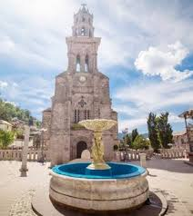
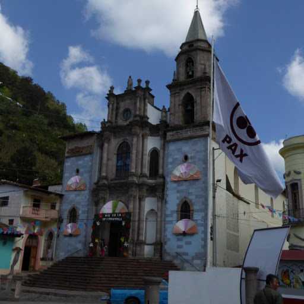
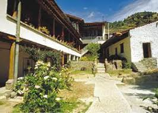
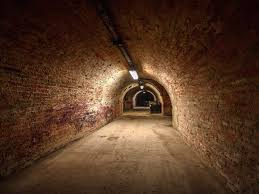
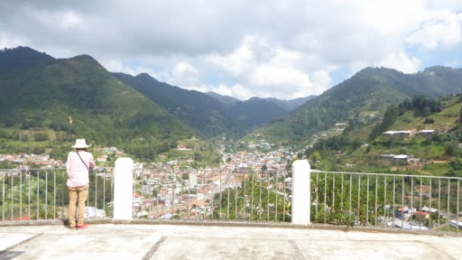
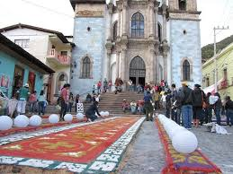
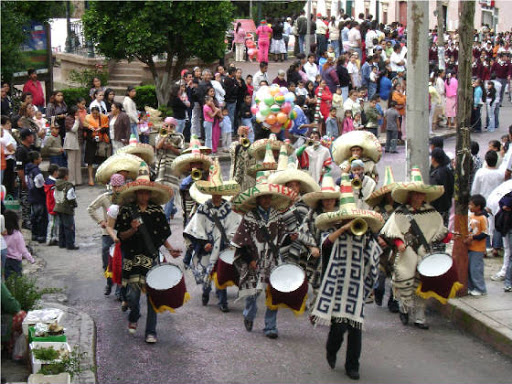

Templo de la Inmaculada Concepción |
 | Es de estilo gótico y elaborado en cantera rosa y gris, compone el edificio más sobresaliente entre el paisaje de casas de tejas de color rojizo. Levantado en el siglo XVIII en pleno centro de la pobla3ión, cuenta con un altar traído desde Italia y con las bellas imágenes de la Virgen de la Inmaculada Concepción y de San José, de París. | ||||||||||||
Parroquia de San Simón Celador |
 | Esta parroquia se encuentra justo frente al Templo de la Inmaculada Concepción, con una pequeña plaza entre una y otra iglesia, la Parroquia de San Simón es originaria del siglo XVIII, se encuentra junto al palacio municipal. | ||||||||||||
La Casa Parker |
 | Esta casa fue el hogar de Bill y Joyce Parker, personajes importantes en la historia minera de Angangueo, pues fueron quienes trajeron enseñanzas sobre la extracción de objetos. Lo que alguna vez fuera su hogar es ahora un museo en el que se puede observar una gran colección de fotografías tomadas por ellos mismos en los que reflejan la mejor etapa de la época minera. | ||||||||||||
Túnel turístico San Simón |
 |
Éste túnel fue en algún momento una mina con 9 metros de profundidad aproximadamente y unos 100 metros de largo, actualmente se ha adaptado como un pequeñe;o museo minero, aquí se presentan algunas herramientas y ropas utilizadas en los trabajos de minería. El recorrido comienza desde la Casa Parker y finaliza en el Templo de la Inmaculada Concepción. | ||||||||||||
Mirador de la Cruz de Hierro |
 |
Para llegar hasta aquí será necesario cubrir un camino de terracería hasta subir a lo más alto, la recompensa es asombrosa, desde aquí obtendrá una vista panorámica de todo el pueblo y las montañe;as que se encuentran alrededor. Además un poco más arriba se encuentra la cueva desde donde parten las peregrinaciones a la Virgen de Guadalupe. |
| 
Inmaculada Concepción |

San Simón |
Mariposa Monarca |
Santa Cruz |